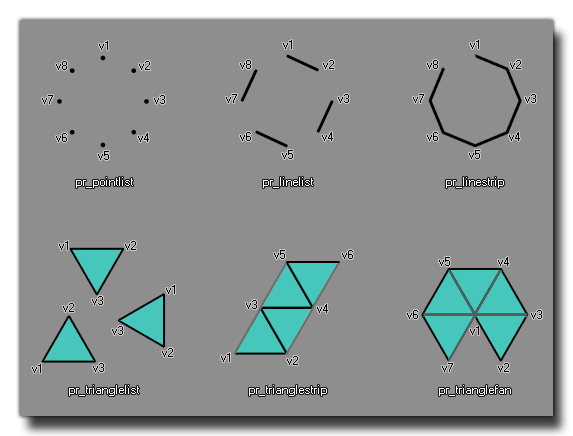

draw_primitive_begin(kind)
| Argument | Description |
|---|---|
| kind | The kind of primitive you are going to draw. |
Returns : N/A
This function must be called before you can define any primitives. There are 6 types of primitives you can define with the following constants :
- pr_pointlist
- pr_linelist
- pr_linestrip
- pr_trianglelist
- pr_trianglestrip
- pr_trianglefan
The following image illustrates basically how these should look and also the order in which you should define the vertexes : 
var i, steps, xx, yy, radius;
steps=20;
xx=50;
yy=50;
radius=30;
draw_primitive_begin(pr_trianglefan);
draw_vertex(xx, yy);
for(i = 0; i <= steps; i += 1)
{
draw_vertex(xx + lengthdir_x(radius, 270 * i / steps), yy + lengthdir_y(radius, 270 * i / steps));
}
draw_primitive_end();
The above code will draw three quarters of a circle made from primitives.